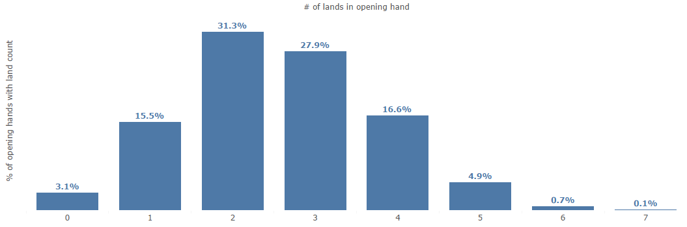

Magic: The Gathering Deck Construction
One of the hobbies I've come to enjoy again over the last couple of years (after more than a 20 year hiatus) is playing Magic: The Gathering (MTG)
If you're unfamiliar with MTG (and I'm not surprised if you aren't), it's a collectible card game where you adopt the role of a wizard looking to defeat your opponent(s) by casting spells to both attack and defend. You start the game by drawing an initial hand of 7 cards, and draw one additional card each term.
In order to cast spells you use mana. The main source of mana is land cards, and so one of the many challenges in building a deck is ensuring that you have enough land available in your opening hand and on subsequent turns to ensure you can cast small spells early and bigger spells as the match progresses.
There are lots of online resources available to help you decide how much land to put into a deck, but I thought it would be fun to mess around with this on my own, using Python and Tableau.
The deck I chose I've listed in this post: it is a 63 card Red and Black deck, with 21 creatures, 19 spells, and 23 lands.
The 'casting cost' of each card lets you know the type and quantity of mana required to cast it. As you can see in the listing, land has no casting cost: you simply get to play one 'free' each turn.
For example, 'Bladewing the Risen' requires two black {B} mana, two red {R} mana, and then three additional mana of any colour.
It should be noted that in addition to the 23 lands listed, there are 7 spells that either provide mana or reduce the cost of spells. Those 7 spells require mana of any colour, so it's not the type of mana that is drawn that is important, simply that we draw enough mana.
The first thing I decided to do was to experiment with how many lands I should expect in my opening draw of seven. To do this I wrote a Python script that shuffles the deck 20,000 times, and then counts the number of lands in the opening draw.
The results of that script are listed below. Note that if you draw too few lands in your opening hand you can mulligan and re-draw seven cards (if you mulligan a second time you draw one fewer card to start, which is a definite disadvantage).
I will always mulligan if I have less than 2 lands in my opening hand, which occurred in 18.6% of the simulations (almost 1 in 5). The odds of me having less than 2 lands twice in a row would be 3.5%, which I'm comfortable with.
More than 50% of the time I should draw either 2 or 3 lands which is reasonable spot for a lot of decks, but maybe not this one. A lot of the dragons cost a lot of mana to bring out, so I'm going to want to get as much mana sources on the table as quickly as possible. The Urza lands and most of the artifacts do that, but I think I'll tinker with the number of lands (and maybe remove a few creatures) in order to increase the chances my opening hand leads to an early dragon.
Well that's it for this entry - next time I'll dive into my land count a little further by looking at subsequent draws and seeing how long it takes me to get to a given number of land cards in play.